智能体设计 I：上下文管理与工具设计
从零设计一个智能体：智能体循环、上下文工程（压缩、检索、缓存友好）与工具接口设计。
现代 AI 系统：智能体与系统优化
Juncheng Yang
智能体设计 I：上下文管理与工具设计
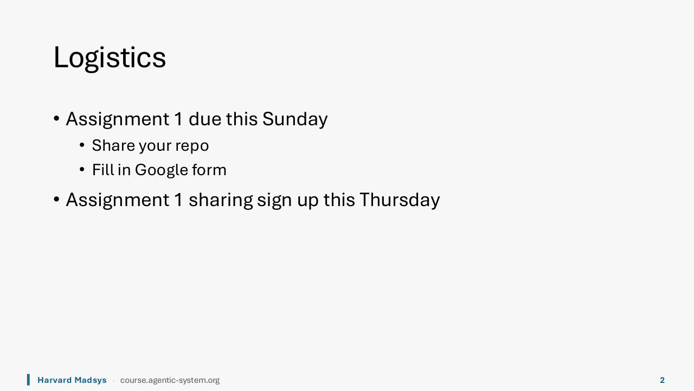
事务安排
- 作业 1 本周日截止
- 共享你的仓库
- 填写 Google 表单
- 作业 1 分享环节本周四开始报名
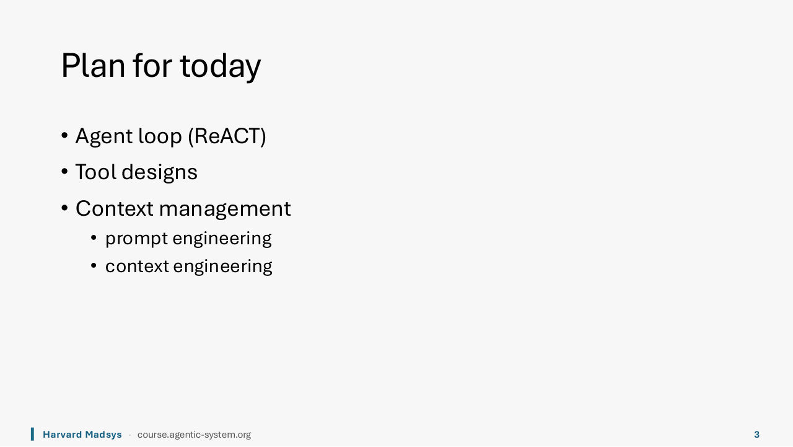
今天的安排
- 智能体循环（ReAct）
- 工具设计
- 上下文管理
- 提示词工程（prompt engineering）
- 上下文工程（context engineering）
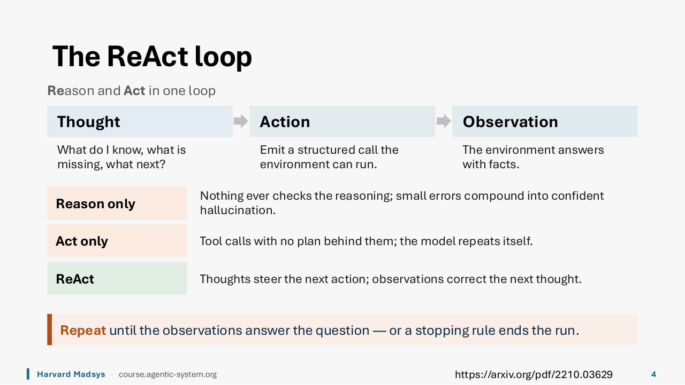
ReAct 循环
在一个循环里同时“推理（Reason）”与“行动（Act）”
- 思考（Thought）：我知道什么、缺什么、下一步做什么？
- 行动（Action）：发出一个环境能执行的结构化调用
- 观察（Observation）：环境用事实作答
对比：
- 只推理：没有任何东西检查推理过程；小错误会累积成自信满满的幻觉
- 只行动：工具调用背后没有计划；模型不断重复自己
- ReAct：思考引导下一个行动；观察修正下一个思考
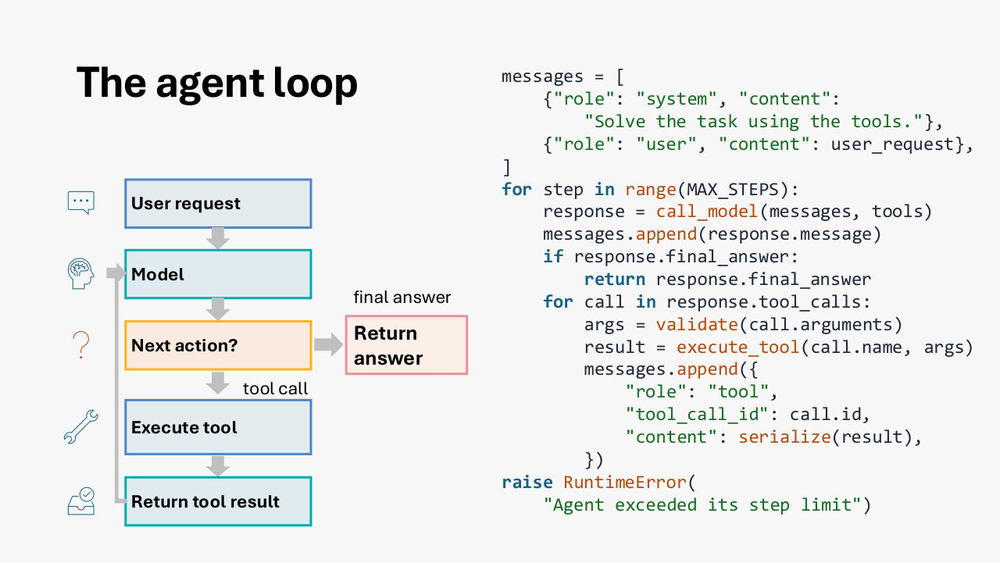
智能体循环
messages = [
{"role": "system", "content":
"Solve the task using the tools."},
{"role": "user", "content": user_request},
]
for step in range(MAX_STEPS):
response = call_model(messages, tools)
messages.append(response.message)
if response.final_answer:
return response.final_answer
for call in response.tool_calls:
args = validate(call.arguments)
result = execute_tool(call.name, args)
messages.append({
"role": "tool",
"tool_call_id": call.id,
"content": serialize(result),
})
raise RuntimeError("Agent exceeded its step limit")（图：用户请求 → 模型决定下一步？→ 工具调用 → 执行工具 → 返回工具结果 → 模型……；若是最终答案 → 返回答案）
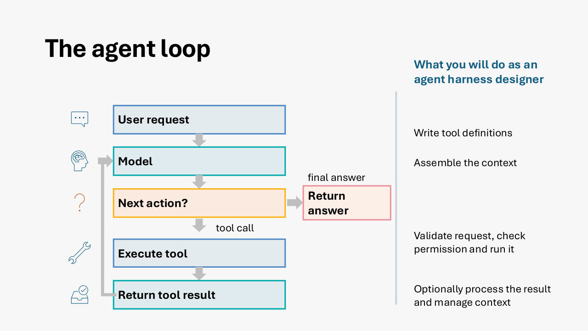
智能体循环：Harness 设计者要做什么
作为智能体 Harness 的设计者，你要做的事：
- 组装上下文
- 编写工具定义
- 校验请求、检查权限并执行
- （可选）处理结果并管理上下文
（图同上页，标出这些环节在循环中的位置）
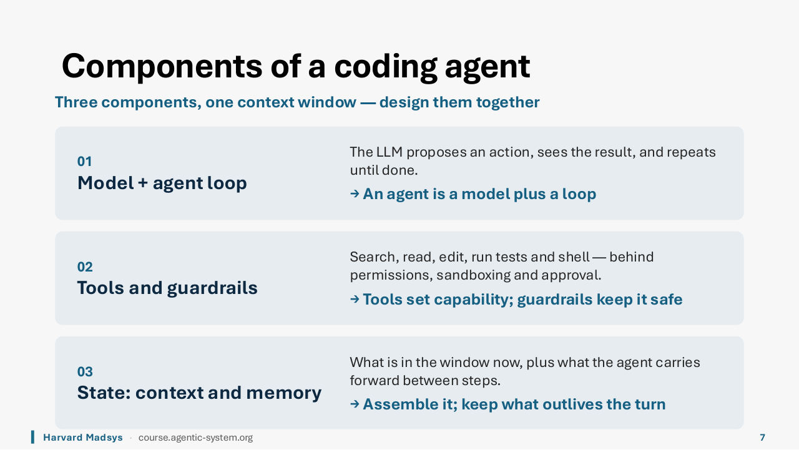
编程智能体的组成部分
三个组件，一个上下文窗口——要一起设计
- 模型 + 智能体循环：LLM 提出动作、看到结果、循环直到完成 → 智能体 = 模型 + 循环
- 工具与护栏：搜索、读取、编辑、运行测试和 shell——置于权限、沙箱和审批之后 → 工具决定能力，护栏保证安全
- 状态：上下文与记忆：窗口里现在有什么，以及智能体在步骤之间携带的东西 → 组装它；保留那些比单轮更长寿的内容
我们应该给智能体提供哪些工具？
- 搜索 / 读取
- 编辑 / 写入
- 执行
- 其他
举手 = 得分
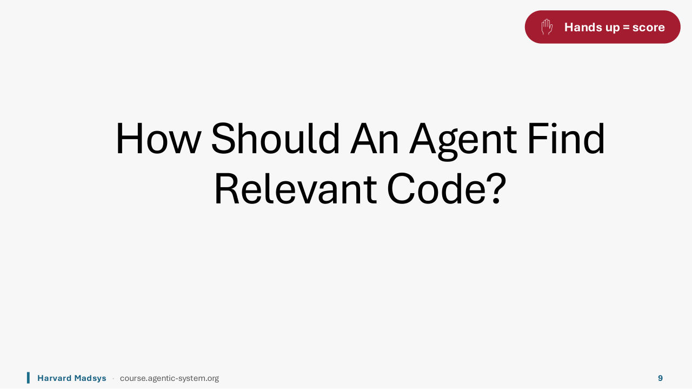
智能体该如何找到相关代码？
举手 = 得分
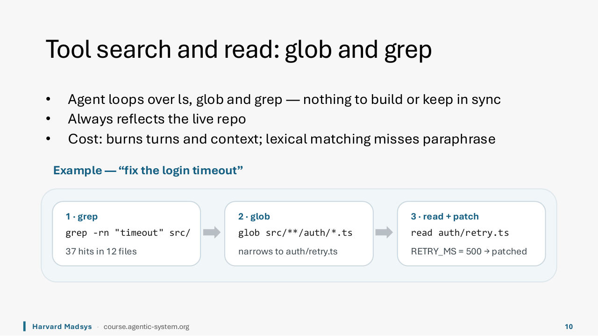
搜索与读取工具：glob 和 grep
- 智能体循环调用 ls、glob 和 grep——无需构建或保持同步任何东西
- 永远反映仓库的实时状态
- 代价：消耗轮次和上下文；字面匹配会漏掉换了说法的内容
示例——“修复登录超时”
- grep：
grep -rn "timeout" src/→ 12 个文件中 37 处命中 - glob：
glob src/**/auth/*.ts→ 缩小到 auth/retry.ts - 读取 + 修补：读 auth/retry.ts →
RETRY_MS = 500→ 已修补
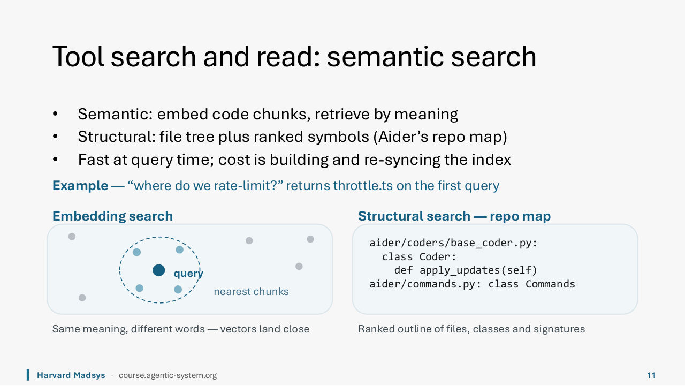
搜索与读取工具：语义搜索
- 语义：把代码块做 embedding，按含义检索
- 结构：文件树 + 排序后的符号（Aider 的 repo map）
- 查询时很快；代价是构建并重新同步索引
- 示例——“我们在哪里做限流？”第一次查询就返回 throttle.ts
Embedding 搜索：查询 → 最近邻代码块。意思相同、措辞不同——向量会落得很近
结构搜索——repo map：文件、类和函数签名的排序大纲
aider/coders/base_coder.py:
class Coder:
def apply_updates(self)
aider/commands.py: class Commands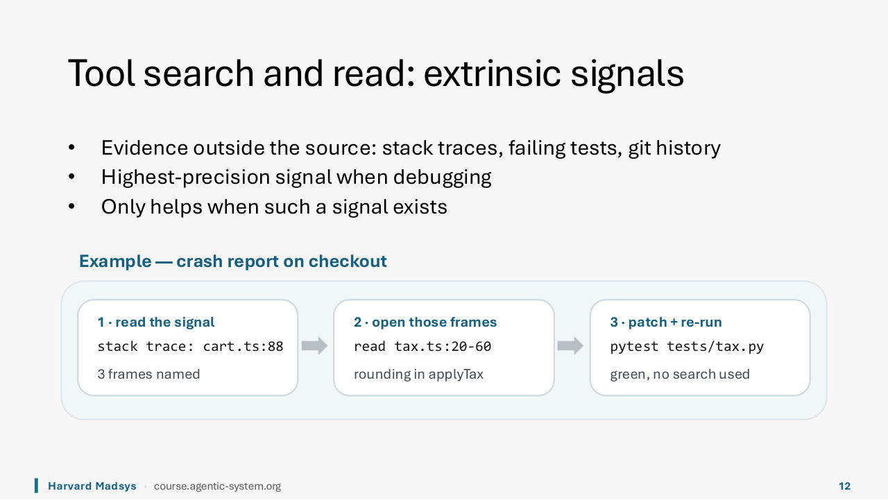
搜索与读取工具：外部信号
- 源码之外的证据：堆栈跟踪、失败的测试、git 历史
- 调试时精度最高的信号
- 只在存在这类信号时才有用
示例——结账时的崩溃报告
- 读取信号：堆栈
cart.ts:88，点名了 3 个栈帧 - 打开这些栈帧：读
tax.ts:20-60→ applyTax 中的舍入问题 - 修补 + 重跑：
pytest tests/tax.py→ 通过，全程没用搜索
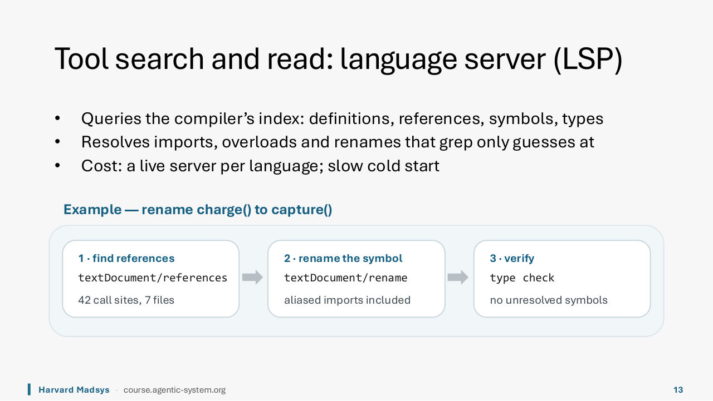
搜索与读取工具：语言服务器（LSP）
- 查询编译器的索引：定义、引用、符号、类型
- 能解析 grep 只能靠猜的 import、重载和重命名
- 代价：每种语言需要一个常驻服务器；冷启动慢
示例——把 charge() 重命名为 capture()
- 查找引用：
textDocument/references→ 7 个文件中 42 处调用 - 重命名符号：
textDocument/rename→ 包括别名导入 - 验证：类型检查 → 没有未解析的符号
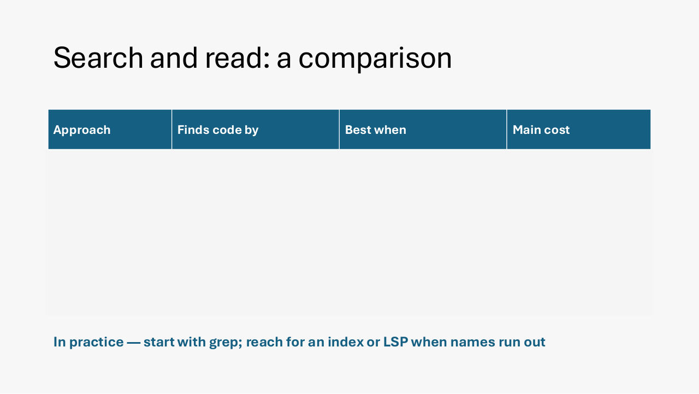
搜索与读取：对比
| 方法 | 查找代码的依据 | 最适合 | 主要代价 |
|---|---|---|---|
| glob / grep | 字面名称和路径 | 名称已知或可猜 | 每次搜索都耗轮次和上下文 |
| 语义索引 | 代码块 embedding 的含义 | 描述和代码措辞对不上 | 构建并重新同步索引 |
| 外部信号 | 堆栈、失败测试、git 历史 | 已有报告直接指向代码 | 只有部分任务才有 |
| 语言服务器 | 编译器的符号图 | 修改必须跟随引用 | 每种语言一个常驻服务器 |
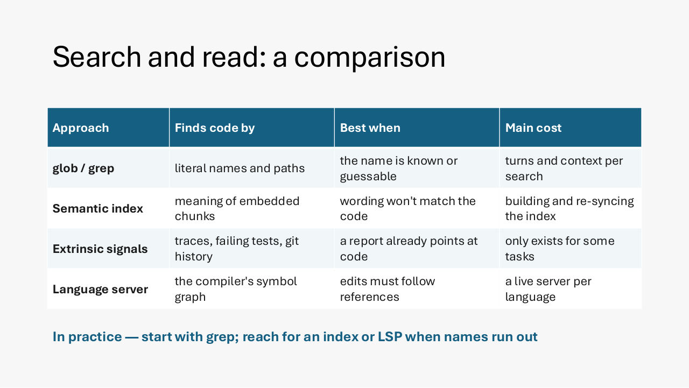
搜索与读取：对比
（同上页）
| 方法 | 查找代码的依据 | 最适合 | 主要代价 |
|---|---|---|---|
| glob / grep | 字面名称和路径 | 名称已知或可猜 | 每次搜索都耗轮次和上下文 |
| 语义索引 | 代码块 embedding 的含义 | 描述和代码措辞对不上 | 构建并重新同步索引 |
| 外部信号 | 堆栈、失败测试、git 历史 | 已有报告直接指向代码 | 只有部分任务才有 |
| 语言服务器 | 编译器的符号图 | 修改必须跟随引用 | 每种语言一个常驻服务器 |
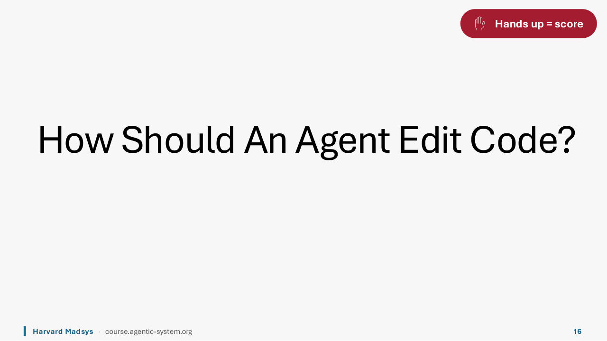
智能体该如何编辑代码？
举手 = 得分
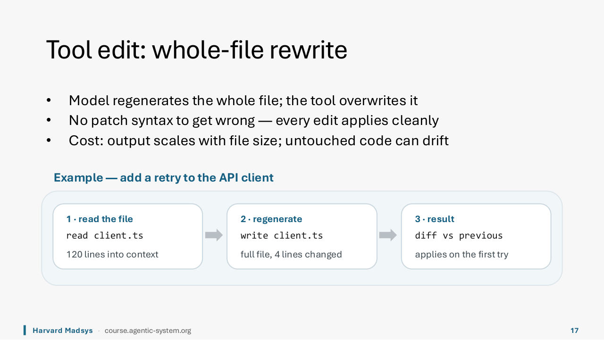
编辑工具：整文件重写
- 模型重新生成整个文件；工具直接覆盖
- 没有补丁语法可以写错——每次编辑都能干净地应用
- 代价：输出量随文件大小增长；没动的代码可能悄悄漂移
示例——给 API 客户端加重试
- 读文件：读 client.ts → 120 行进入上下文
- 重新生成：写 client.ts → 整个文件，改了 4 行
- 结果：与上一版 diff → 第一次就成功应用
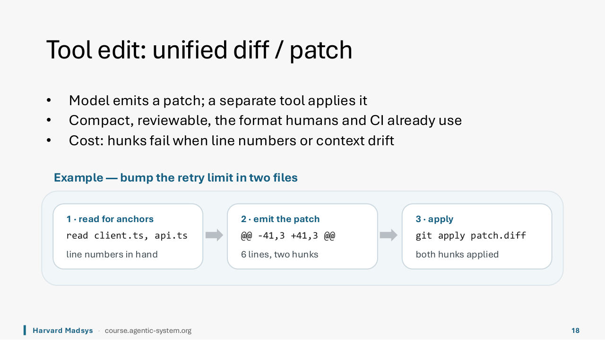
编辑工具：统一 diff / 补丁
- 模型输出一个补丁；由另一个工具来应用
- 紧凑、可审查，是人和 CI 早已在用的格式
- 代价：当行号或上下文漂移时，hunk 会应用失败
示例——在两个文件中调高重试上限
- 读取锚点：读 client.ts、api.ts → 拿到行号
- 输出补丁：
@@ -41,3 +41,3 @@→ 6 行，两个 hunk - 应用：
git apply patch.diff→ 两个 hunk 都应用成功
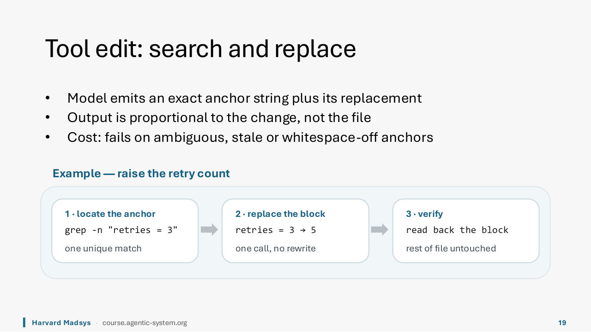
编辑工具：搜索与替换
- 模型输出一个精确的锚点字符串及其替换内容
- 输出量与改动成正比，而不是与文件大小成正比
- 代价：锚点有歧义、过时或空白字符不一致时会失败
示例——调高重试次数
- 定位锚点：
grep -n "retries = 3"→ 唯一匹配 - 替换代码块：
retries = 3 → 5→ 一次调用，无需重写 - 验证：读回该代码块 → 文件其余部分未被改动
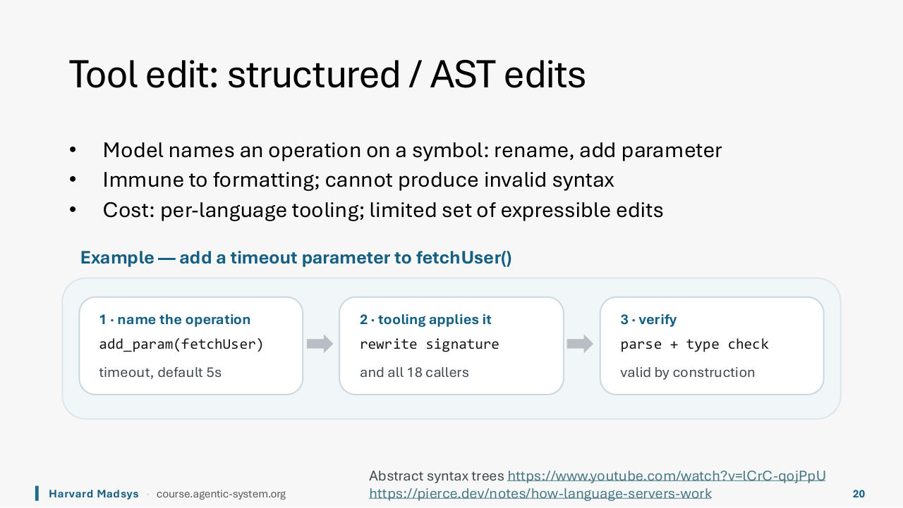
编辑工具：结构化 / AST 编辑
- 模型指定对某个符号的操作：重命名、添加参数
- 不受格式影响；不可能产生非法语法
- 代价：每种语言需要专门工具；能表达的编辑种类有限
示例——给 fetchUser() 添加 timeout 参数
- 指定操作：
add_param(fetchUser)→ timeout，默认 5s - 由工具应用：重写函数签名及全部 18 个调用处
- 验证：解析 + 类型检查 → 天然合法
参考：抽象语法树 https://www.youtube.com/watch?v=lCrC-qojPpU ；https://pierce.dev/notes/how-language-servers-work
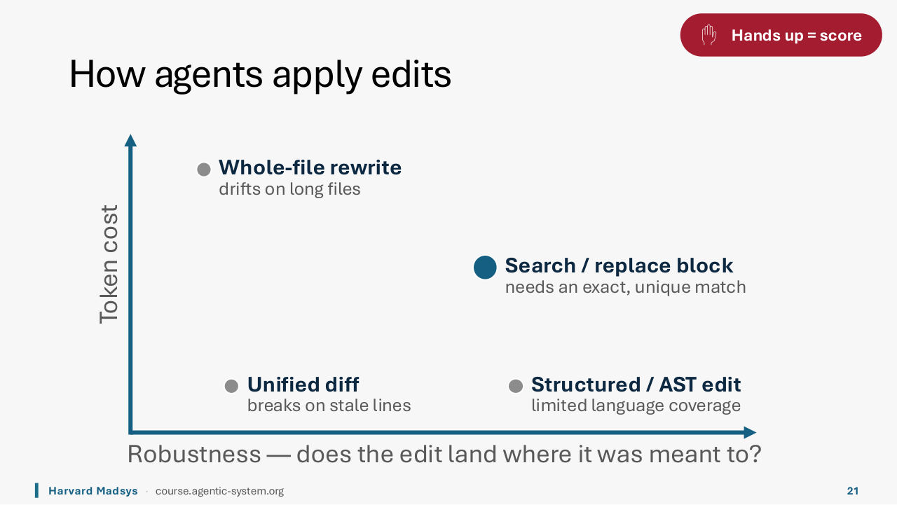
智能体如何应用编辑
（图：横轴为 token 成本，纵轴为稳健性——编辑是否落在预期位置？）
- 整文件重写：长文件上会漂移
- 统一 diff：行号过时就会失败
- 搜索/替换块：需要精确且唯一的匹配
- 结构化 / AST 编辑：语言覆盖有限
举手 = 得分
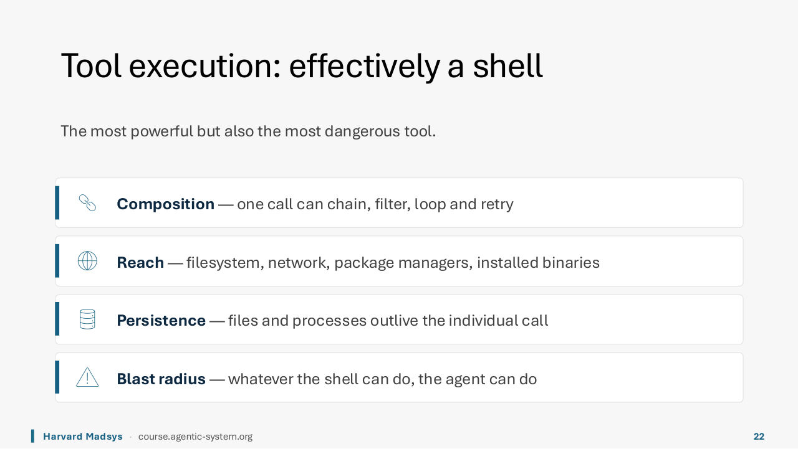
执行工具：本质上就是一个 shell
最强大、也最危险的工具。
- 组合能力——一次调用就能串联、过滤、循环和重试
- 触达范围——文件系统、网络、包管理器、已安装的程序
- 持久性——文件和进程在单次调用结束后依然存在
- 爆炸半径——shell 能做的，智能体都能做
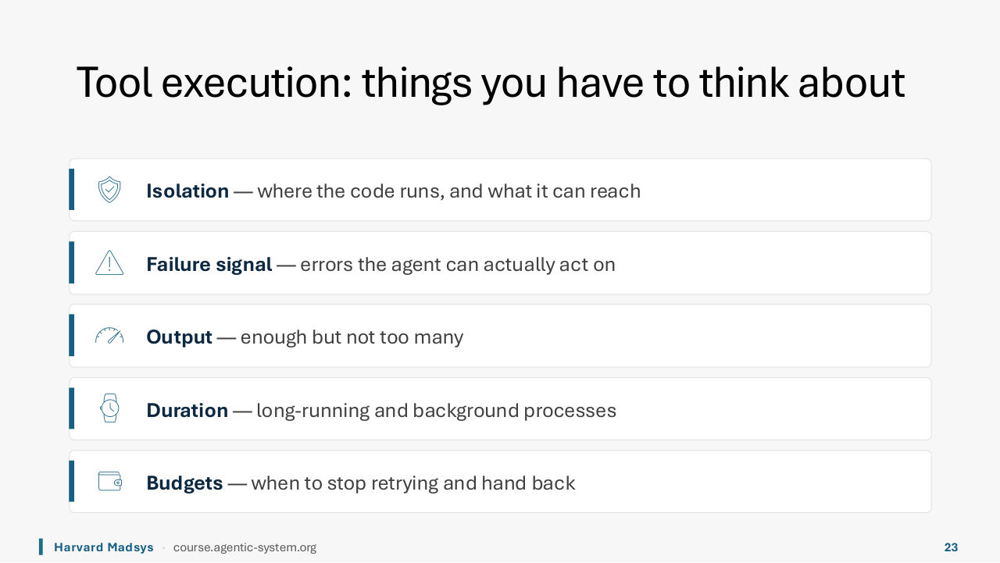
执行工具：你必须考虑的事
- 失败信号——给出智能体真正能据此行动的错误
- 输出——足够，但不能太多
- 时长——长时间运行和后台进程
- 预算——何时停止重试、把控制权交回
- 隔离——代码在哪里运行，能触达什么
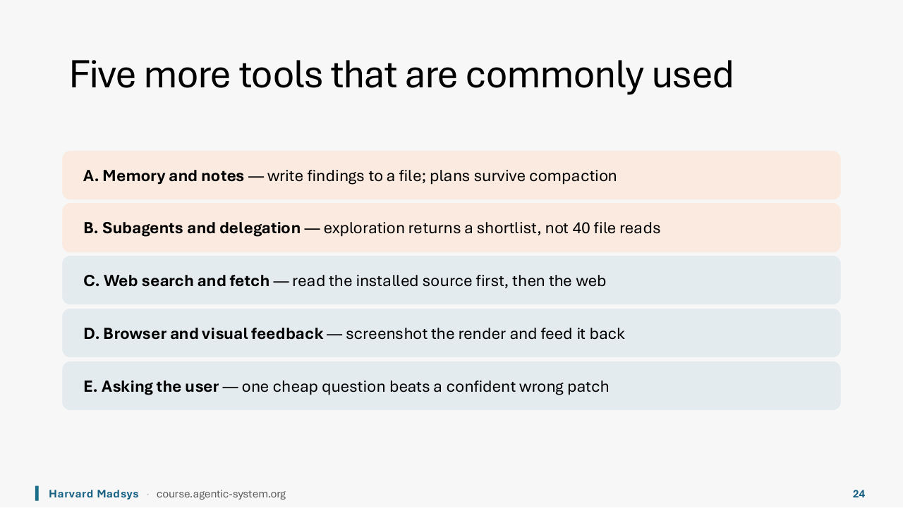
另外五种常用工具
- A. 记忆与笔记——把发现写进文件；计划能在压缩后存活
- B. 子智能体与委派——探索返回一份候选清单，而不是 40 次文件读取
- C. 网络搜索与抓取——先读已安装的源码，再去网上查
- D. 浏览器与视觉反馈——截取渲染结果并反馈给模型
- E. 询问用户——问一个廉价的问题，胜过自信地打一个错误补丁
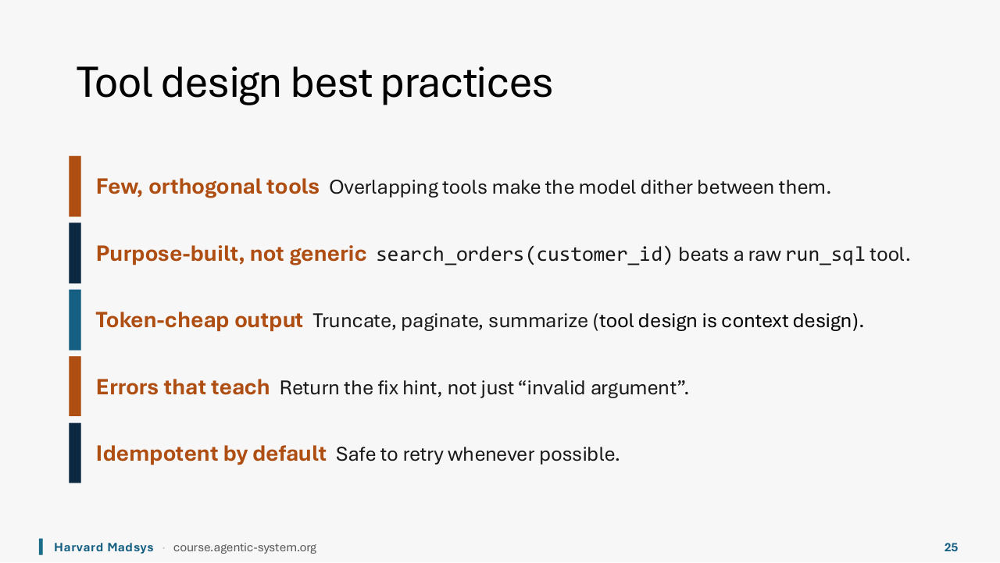
工具设计最佳实践
- 少而正交的工具：功能重叠的工具会让模型在它们之间犹豫不决
- 专用而非通用：
search_orders(customer_id)胜过一个裸的run_sql工具 - 输出要省 token：截断、分页、摘要（工具设计就是上下文设计）
- 会“教”的错误信息：返回修复提示，而不只是“参数无效”
- 默认幂等：尽可能让重试是安全的
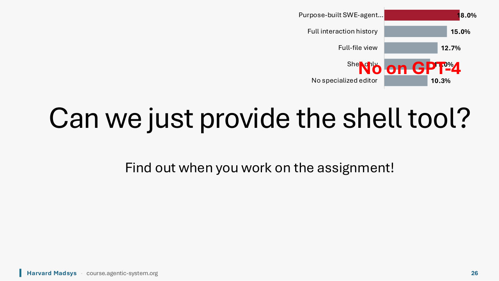
能不能只提供一个 shell 工具？
做作业时自己找答案！
（图：SWE-agent 论文在 GPT-4 上的消融实验——不同工具配置的解决率）
- 无专用编辑器：10.3%
- 只有 shell：11.0%
- 整文件查看：12.7%
- 完整交互历史：15.0%
- 专门设计的 SWE-agent 工具集：18.0%
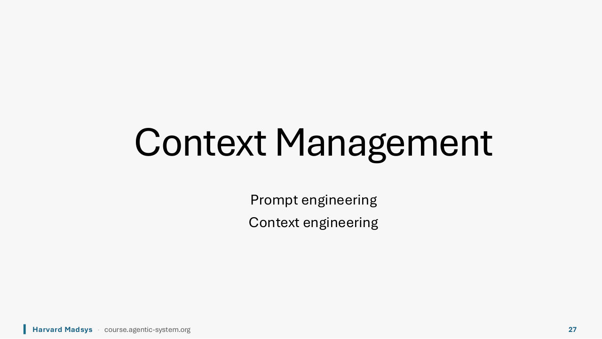
上下文管理
- 提示词工程
- 上下文工程
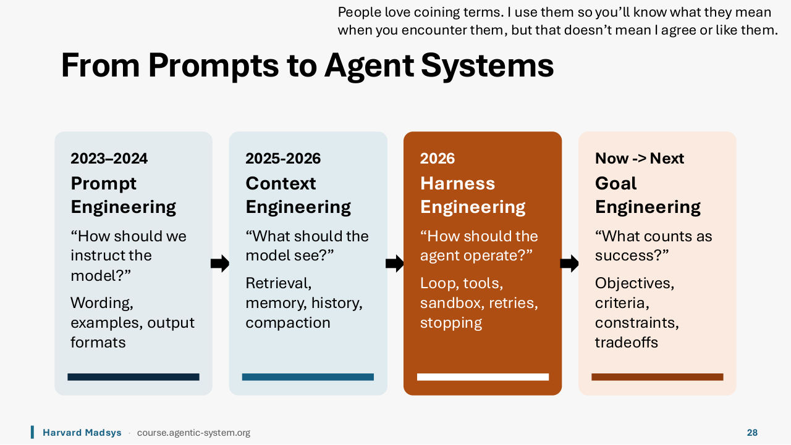
从提示词到智能体系统
- 2023–2024 提示词工程：“我们该如何指示模型？”——措辞、示例、输出格式
- 2025–2026 上下文工程：“模型应该看到什么？”——检索、记忆、历史、压缩
- 2026 Harness 工程：“智能体应该如何运作？”——循环、工具、沙箱、重试、停止
- 现在 → 未来 目标工程：“什么才算成功？”——目标、标准、约束、权衡
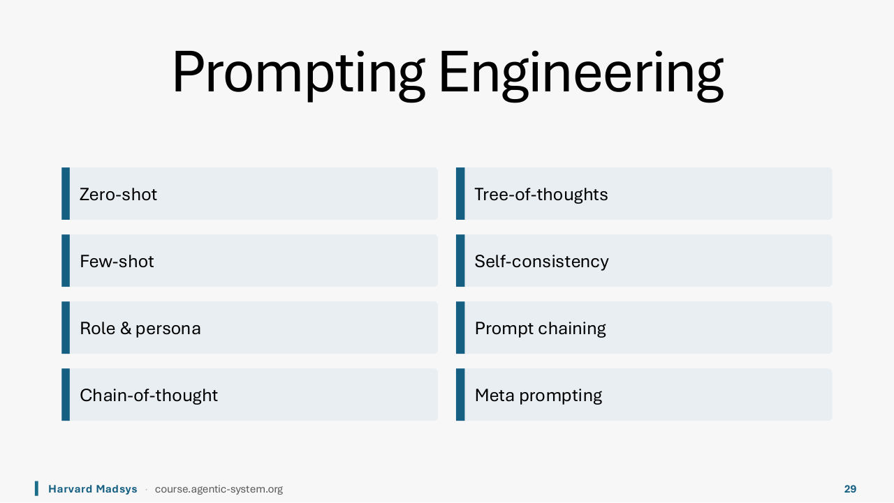
提示词工程
零样本（Zero-shot）· 少样本（Few-shot）· 角色与人设 · 思维链（Chain-of-thought）· 思维树（Tree-of-thoughts）· 自洽性（Self-consistency）· 提示词链（Prompt chaining）· 元提示（Meta prompting）
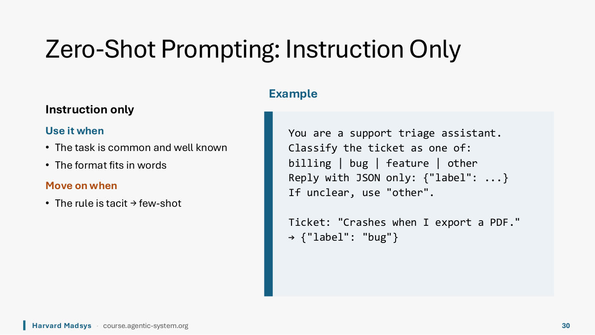
零样本提示：只有指令
You are a support triage assistant.
Classify the ticket as one of:
billing | bug | feature | other
Reply with JSON only: {"label": ...}
If unclear, use "other".
Ticket: "Crashes when I export a PDF."
→ {"label": "bug"}适用于
- 任务常见、广为人知
- 格式用文字就能说清
该换方法的时候
- 规则是隐性的 → 少样本
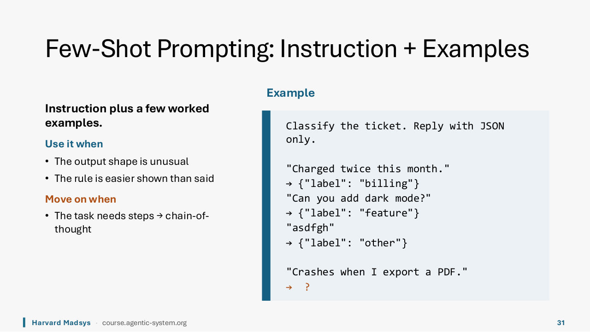
少样本提示：指令 + 示例
Classify the ticket. Reply with JSON only.
"Charged twice this month." → {"label": "billing"}
"Can you add dark mode?" → {"label": "feature"}
"asdfgh" → {"label": "other"}
"Crashes when I export a PDF." → ?指令加上几个完整示例。
适用于
- 输出形态不寻常
- 规则“演示”比“说明”更容易
该换方法的时候
- 任务需要多个步骤 → 思维链
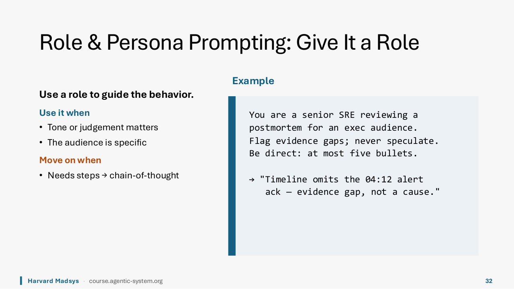
角色与人设提示：给它一个角色
用角色来引导行为。
You are a senior SRE reviewing a
postmortem for an exec audience.
Flag evidence gaps; never speculate.
Be direct: at most five bullets.
→ "Timeline omits the 04:12 alert
ack — evidence gap, not a cause."适用于
- 语气或判断力很重要
- 受众很明确
该换方法的时候
- 需要多个步骤 → 思维链
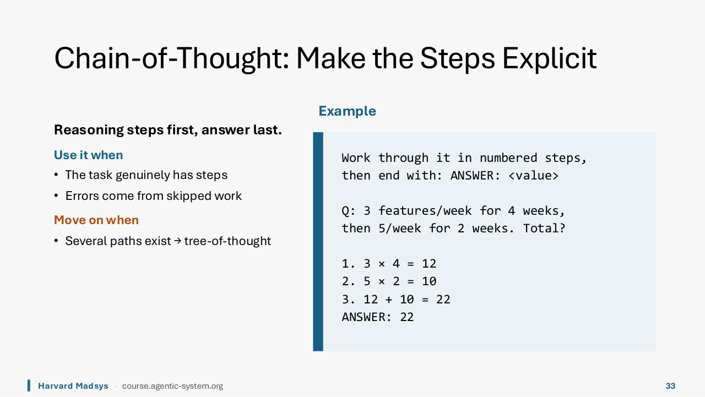
思维链：把步骤显式写出来
先写推理步骤，最后给答案。
Work through it in numbered steps,
then end with: ANSWER: <value>
Q: 3 features/week for 4 weeks,
then 5/week for 2 weeks. Total?
1. 3 × 4 = 12
2. 5 × 2 = 10
3. 12 + 10 = 22
ANSWER: 22适用于
- 任务确实包含多个步骤
- 错误来自跳步
该换方法的时候
- 存在多条可行路径 → 思维树
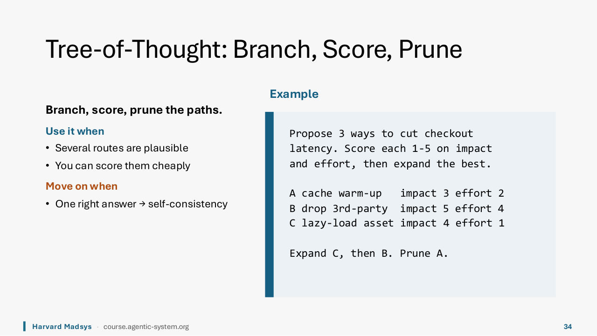
思维树：分支、打分、剪枝
对多条路径进行分支、打分和剪枝。
Propose 3 ways to cut checkout latency.
Score each 1-5 on impact and effort,
then expand the best.
A cache warm-up impact 3 effort 2
B drop 3rd-party impact 5 effort 4
C lazy-load asset impact 4 effort 1
Expand C, then B. Prune A.适用于
- 有几条路线都说得通
- 能低成本地给它们打分
该换方法的时候
- 只有一个正确答案 → 自洽性
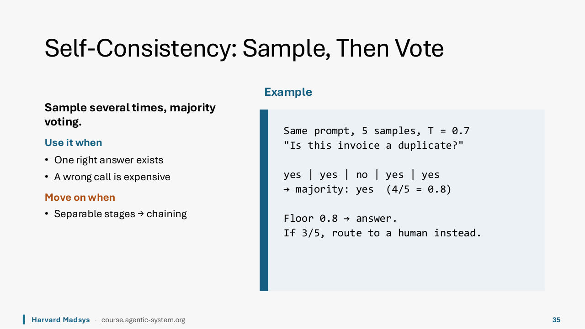
自洽性：多次采样，然后投票
多次采样，多数投票。
Same prompt, 5 samples, T = 0.7
"Is this invoice a duplicate?"
yes | yes | no | yes | yes
→ majority: yes (4/5 = 0.8)
Floor 0.8 → answer.
If 3/5, route to a human instead.（阈值 0.8 → 直接作答；若只有 3/5，则转交人工）
适用于
- 存在唯一正确答案
- 判断错误的代价很高
该换方法的时候
- 可拆分为多个阶段 → 提示词链
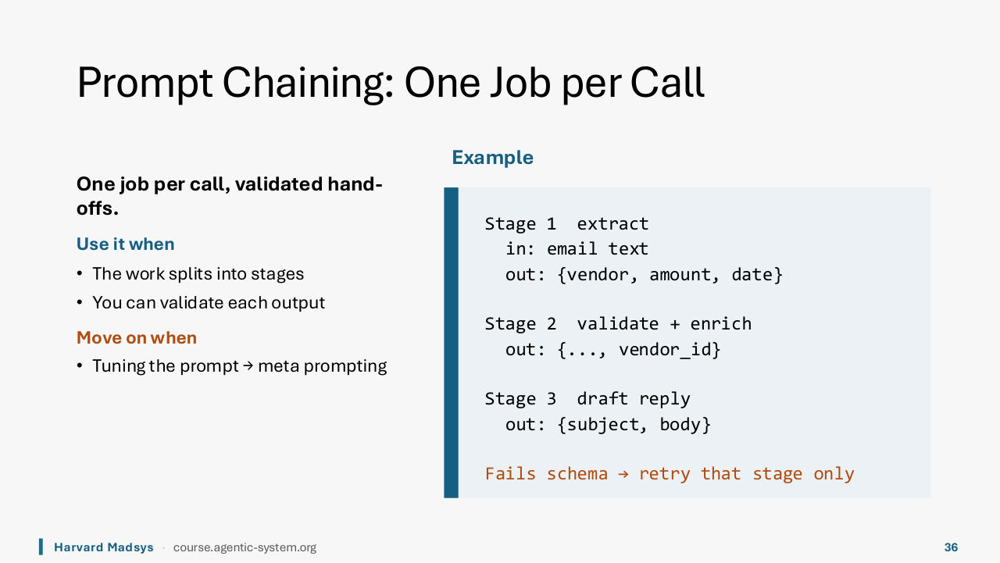
提示词链：每次调用只做一件事
Stage 1 extract in: email text out: {vendor, amount, date}
Stage 2 validate + enrich out: {..., vendor_id}
Stage 3 draft reply out: {subject, body}
Fails schema → retry that stage only每次调用只做一件事，交接时都经过校验（schema 不符 → 只重试该阶段）。
适用于
- 工作能拆成多个阶段
- 每个阶段的输出都能校验
该换方法的时候
- 要调优的是提示词本身 → 元提示
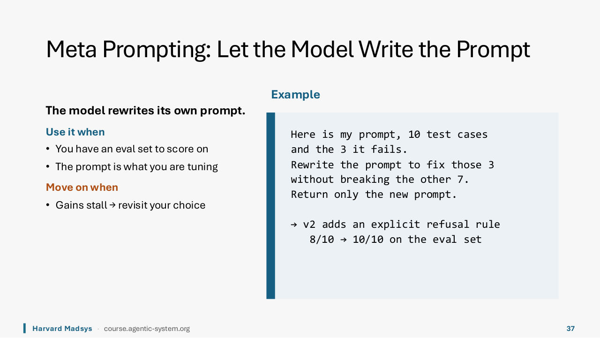
元提示：让模型来写提示词
Here is my prompt, 10 test cases
and the 3 it fails.
Rewrite the prompt to fix those 3
without breaking the other 7.
Return only the new prompt.
→ v2 adds an explicit refusal rule
8/10 → 10/10 on the eval set模型改写它自己的提示词。
适用于
- 你有可以打分的评测集
- 你要调优的正是提示词
该换方法的时候
- 收益停滞 → 重新审视你的选择
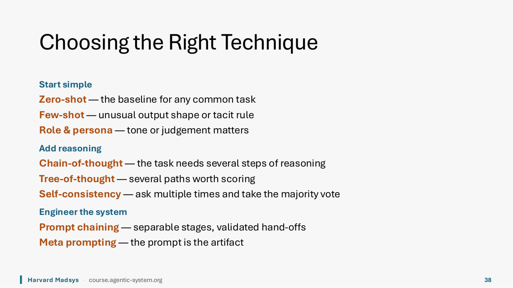
选择合适的技术
从简单开始
- 零样本——任何常见任务的基线
- 少样本——输出形态不寻常或规则是隐性的
- 角色与人设——语气或判断力很重要
加入推理
- 思维链——任务需要多步推理
- 思维树——有多条值得打分的路径
- 自洽性——多问几次，取多数投票
工程化整个系统
- 提示词链——可拆分的阶段，经过校验的交接
- 元提示——提示词本身就是产物
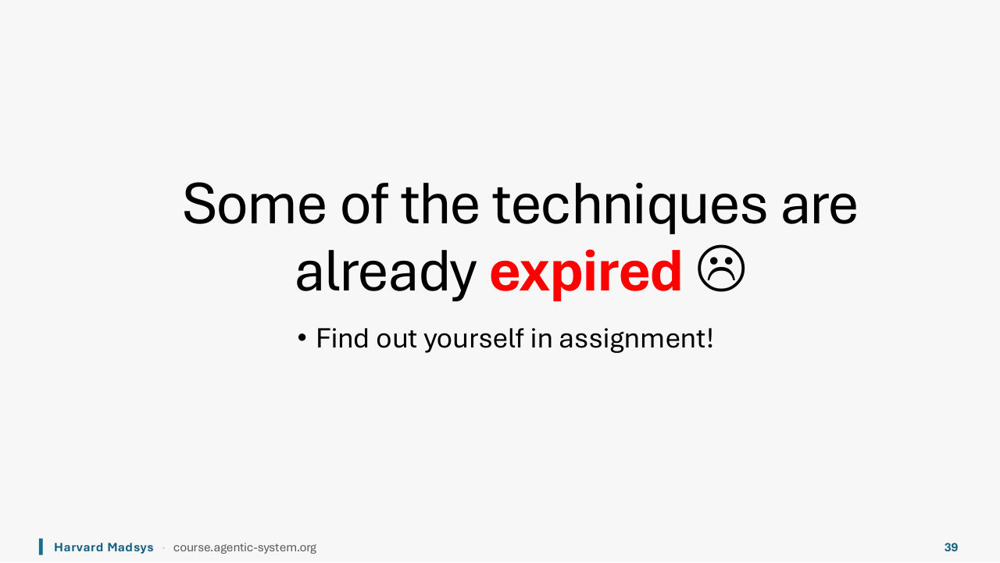
有些技术已经“过期”了
- 在作业中自己去发现吧！
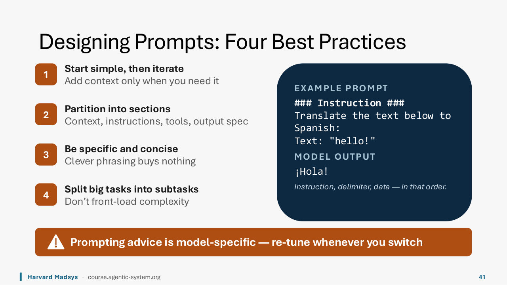
设计提示词：四条最佳实践
### Instruction ###
Translate the text below to Spanish:
Text: "hello!"
→ ¡Hola!指令、分隔符、数据——按这个顺序。
- 从简单开始，再迭代：只在需要时添加上下文
- 分节组织：上下文、指令、工具、输出规范
- 具体而简洁：花哨的措辞毫无用处
- 把大任务拆成子任务：不要一开始就堆满复杂度
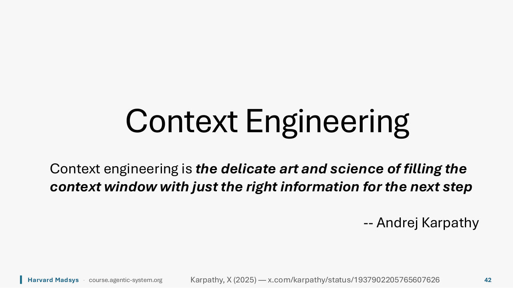
上下文工程
—— Andrej Karpathy
Karpathy, X (2025) — x.com/karpathy/status/1937902205765607626
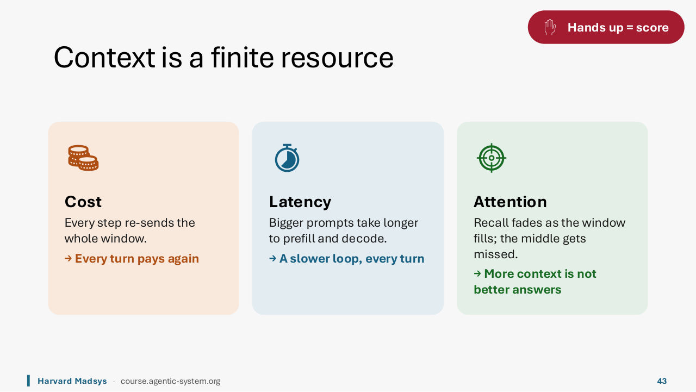
上下文是有限的资源
- 成本：每一步都要重新发送整个窗口 → 每一轮都要重新付费
- 延迟：更大的提示词需要更长的预填充和解码时间 → 每一轮循环都更慢
- 注意力：窗口越满，回忆能力越弱；中间部分容易被忽略 → 更多上下文 ≠ 更好的答案
举手 = 得分
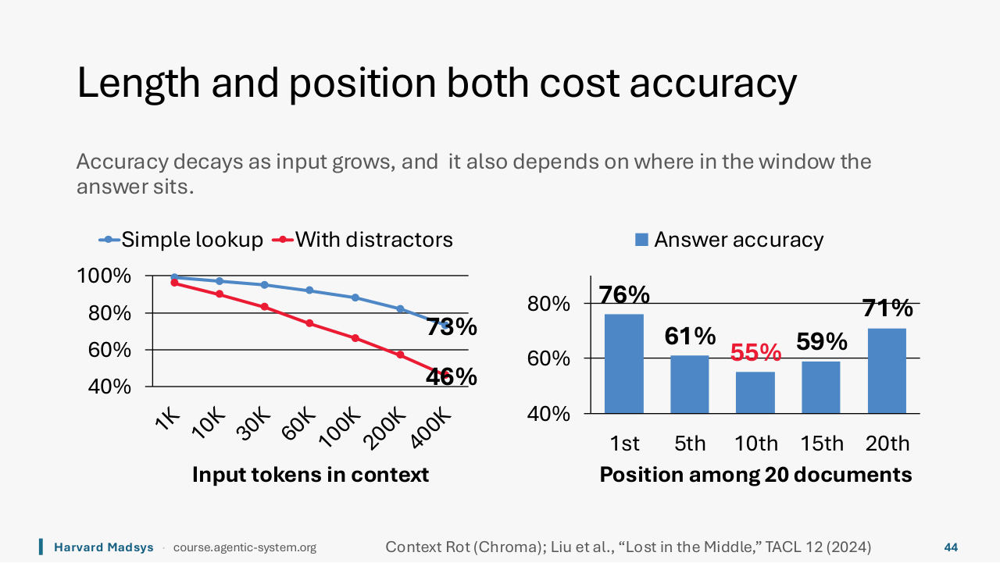
长度和位置都会损害准确率
随着输入变长，准确率下降；而且还取决于答案位于窗口中的哪个位置。
- 左图：随上下文 token 增加，简单查找的准确率降至约 73%，加入干扰项后降至约 46%
- 右图：在 20 篇文档中，答案位于第 1 篇时准确率 76%，位于中间（第 5/10/15 篇）时降至 61% / 55% / 59%，位于第 20 篇时回升到 71%——“迷失在中间”
（来源：Context Rot (Chroma)；Liu et al., “Lost in the Middle,” TACL 12 (2024)）
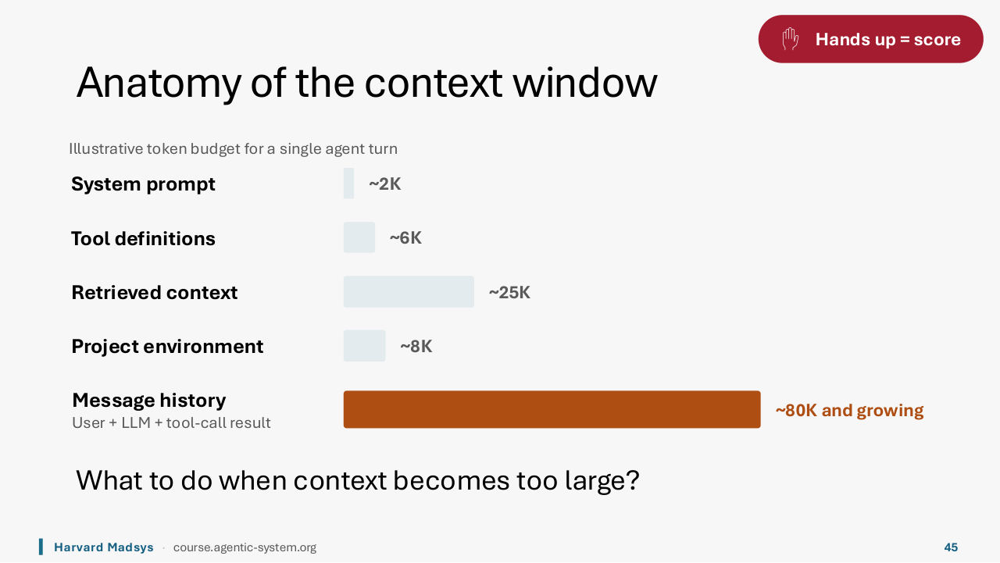
上下文窗口的构成
单个智能体轮次的示意 token 预算：
- 系统提示词：约 2K
- 工具定义：约 6K
- 检索到的上下文：约 25K
- 项目环境：约 8K
- 消息历史（用户 + LLM + 工具调用结果）：约 80K 且持续增长
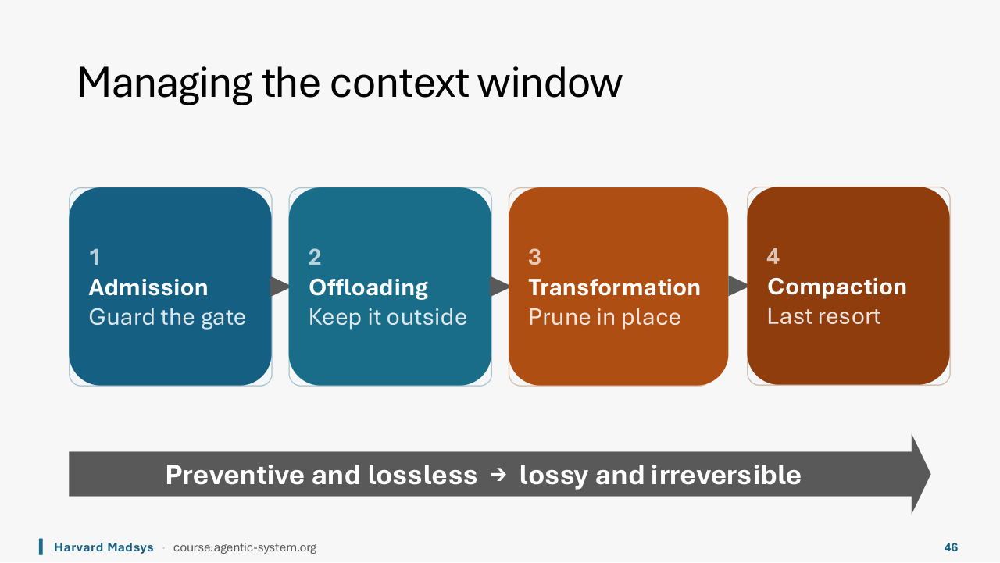
管理上下文窗口
准入（Admission）→ 卸载（Offloading）→ 变换（Transformation）→ 压缩（Compaction）
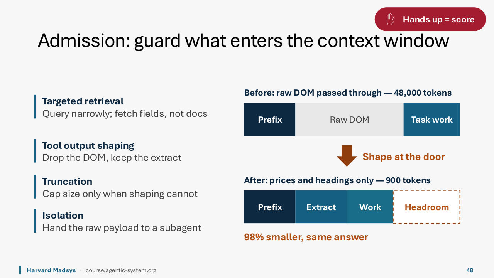
准入：把守进入上下文窗口的内容
- 精准检索：窄范围查询；取字段，而不是整篇文档
- 工具输出整形：丢掉 DOM，保留提取结果
- 截断：只在无法整形时才限制大小
- 隔离：把原始负载交给子智能体
之前：原始 DOM 直接传入——48,000 token
在门口整形之后：只保留价格和标题——900 token
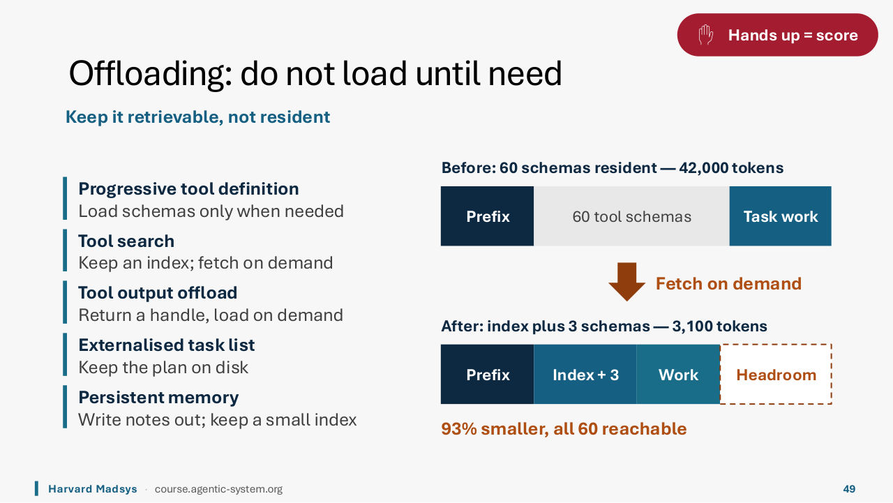
卸载：不需要就不加载
保持可取回，而不是常驻。
- 渐进式工具定义：只在需要时加载 schema
- 工具搜索：维护一个索引；按需取回
- 工具输出卸载：返回一个句柄，按需加载
- 外部化任务列表：把计划放在磁盘上
- 持久记忆：把笔记写出去；只保留一个小索引
之前：60 个 schema 常驻——42,000 token
按需取回之后：索引 + 3 个 schema——3,100 token
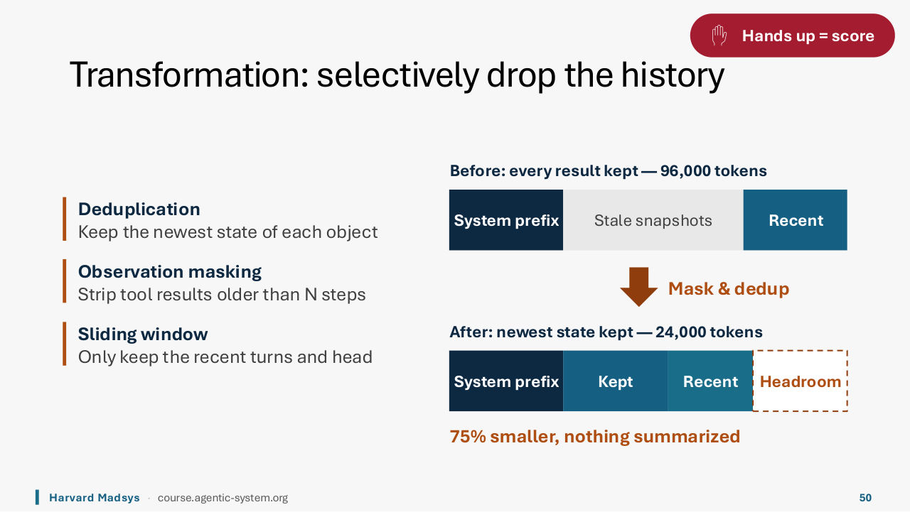
变换：有选择地丢弃历史
- 去重：每个对象只保留最新状态
- 观察遮蔽（observation masking）：剥离 N 步之前的工具结果
- 滑动窗口：只保留最近的轮次和开头
之前：保留所有结果——96,000 token
遮蔽与去重之后：只保留最新状态——24,000 token
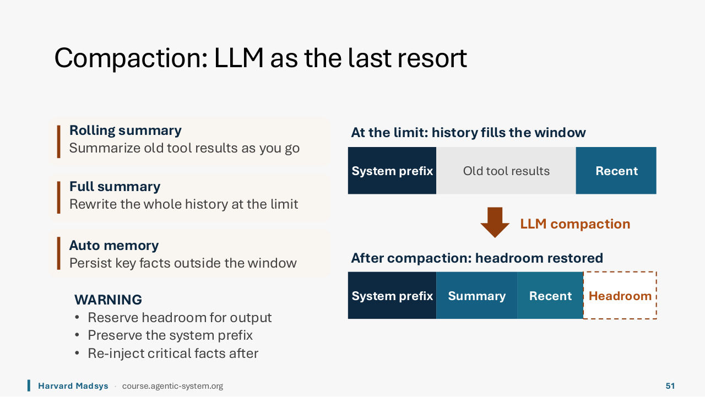
压缩：LLM 作为最后手段
- 滚动摘要：边走边总结旧的工具结果
- 完整摘要：到达上限时重写整段历史
警告
- 为输出预留空间
- 保留系统前缀
- 压缩后重新注入关键事实
- 自动记忆：把关键事实持久化到窗口之外
（图：到达上限时历史塞满窗口 → LLM 压缩 → 系统前缀 + 摘要 + 最近内容，空间恢复）
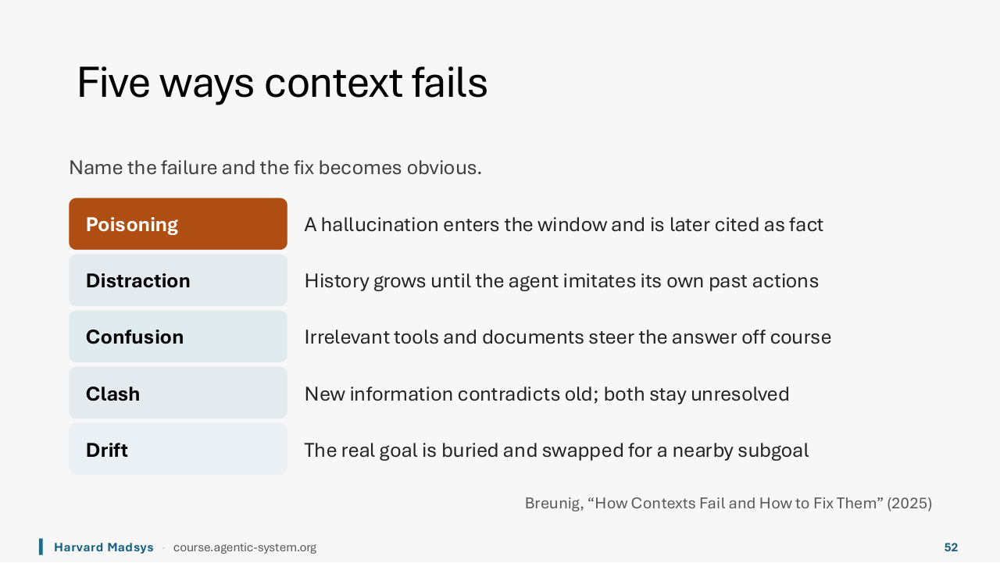
上下文失败的五种方式
- 中毒（Poisoning）：一个幻觉进入窗口，之后被当作事实引用
- 分心（Distraction）：历史越来越长，直到智能体开始模仿自己过去的动作
- 混淆（Confusion）：无关的工具和文档把答案带偏
- 冲突（Clash）：新信息与旧信息矛盾，两者都悬而未决
- 漂移（Drift）：真正的目标被埋没，被替换成一个相近的子目标
（Breunig, “How Contexts Fail and How to Fix Them” (2025)）
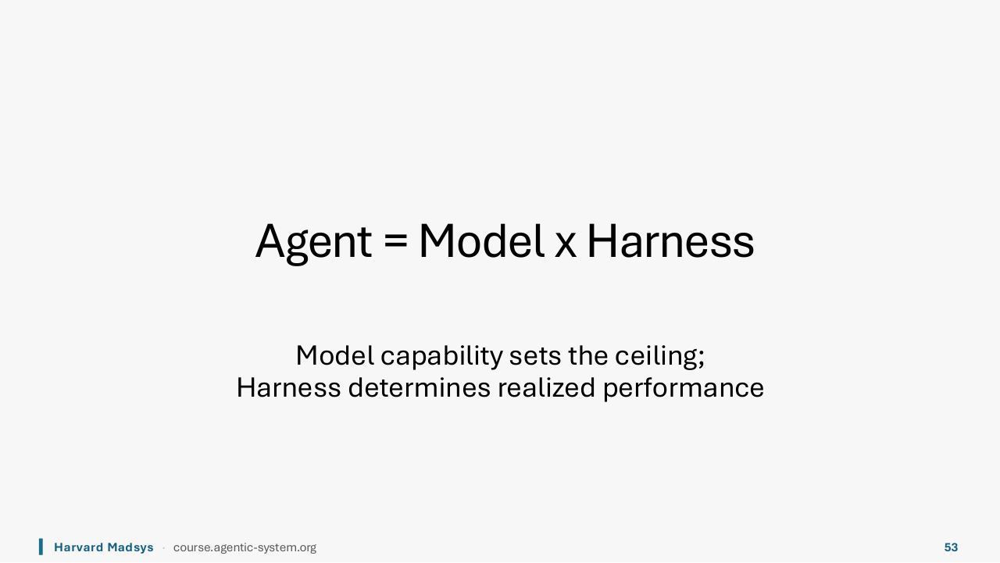
智能体 = 模型 × Harness
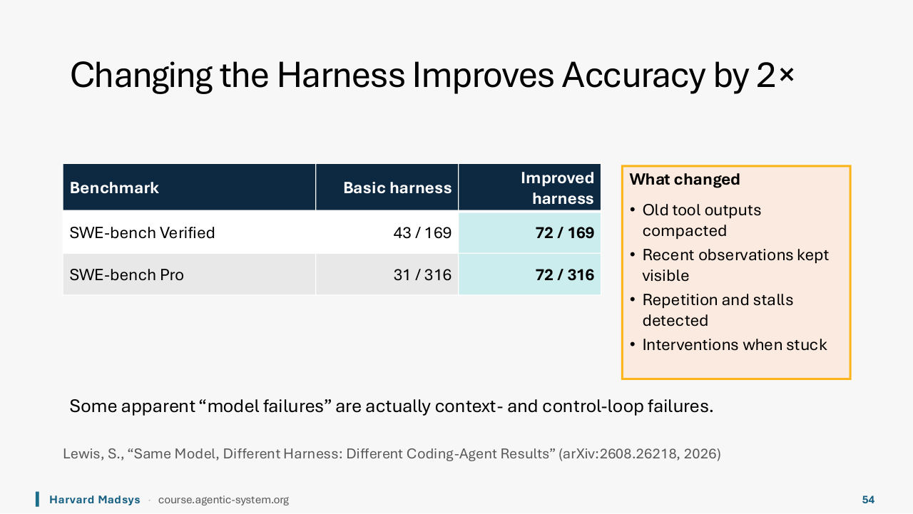
改进 Harness 可让准确率提升 2 倍
| 基准 | 基础 Harness | 改进的 Harness |
|---|---|---|
| SWE-bench Verified | 43 / 169 | 72 / 169 |
| SWE-bench Pro | 31 / 316 | 72 / 316 |
改动了什么
- 压缩旧的工具输出
- 让最近的观察保持可见
- 检测重复和停滞
- 卡住时进行干预
（Lewis, S., “Same Model, Different Harness: Different Coding-Agent Results”, arXiv:2608.26218, 2026）
智能体 = 模型 × Harness
在作业中亲自实验：
下节课
- 智能体设计 II
- 智能体（持久）记忆
- 高性价比的智能体
- 安全与防护
- 多智能体设计
选读材料
超越 ReAct 循环
- ReAct：每一步都循环——思考 → 行动 → 观察
- Reflexion：失败后循环——尝试 → 评估 → 反思批评 → 重试
- Plan-and-execute（先规划后执行）：偏离计划时循环——规划 → 执行各步骤 → 重新规划
- 树搜索：不循环——一次宽搜：状态 → 分支 A · B · C → 保留最佳；多条分支并行探索，只有一条胜出
（图例：模型调用 / 应用或工具动作 / 选中的结果）